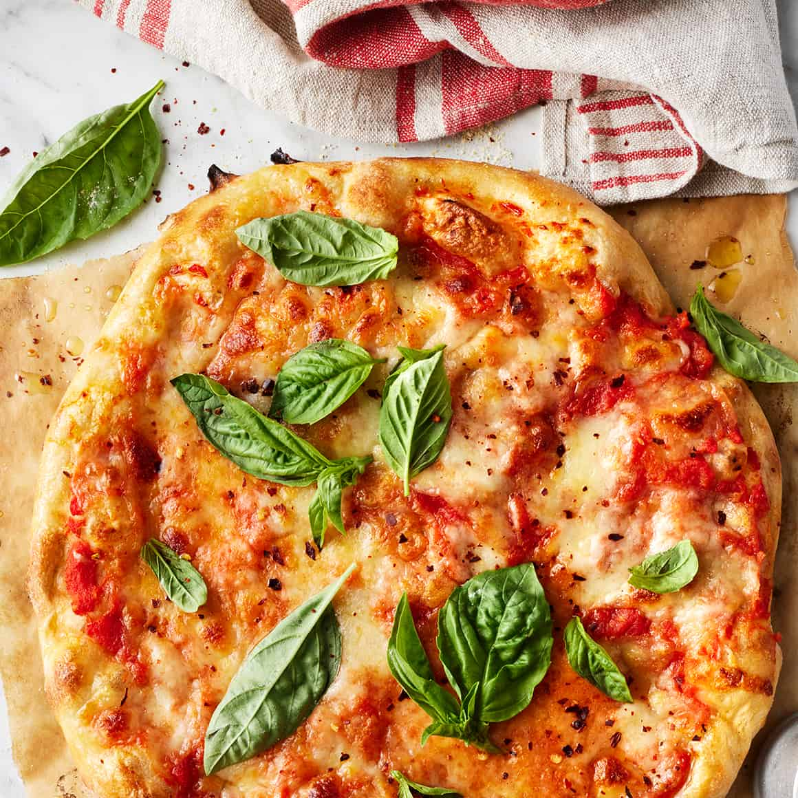

Pizza Margherita or Margherita pizza is a typical Neapolitan pizza, roundish in shape with a raised edge. Traditionally, the dough is stretched by the pizzaiolo in a motion going outwards from the center, pressing with the fingers of both hands on the dough ball, and flipping it several times, shaping it into a disc. Thereafter, it is topped and baked in an oven, which is traditionally made of brick and wood-fired. Pizza Margherita is usually served hot on a plate or folded into four and wrapped in paper.

Ingredients
2 ½ cups (300 g) unbleached all-purpose flour.
1 teaspoon granulated sugar.
½ teaspoon active dry yeast or SAF instant yeast.
¾ teaspoon kosher salt.
7 ounces (105°F to 115°F) warm water.
1 tablespoon extra virgin olive oil.
Semolina and all-purpose flour: for dusting the pizza peel.
1 cup pureed or crushed canned San Marzano tomatoes (or canned Italian plum tomatoes).
2-3 fresh garlic cloves grated with a microplane or pressed.
1 teaspoon extra virgin olive oil plus more for drizzling.
2-3 large pinches of kosher salt to taste.
¼ teaspoon freshly ground black pepper.
2-3 tablespoons finely grated parmigiano-reggiano cheese plus more for serving.
7 ounces fresh mozzarella cheese (not packed in water) cut into ½-inch cubes.
5-6 large fresh basil leaves plus more for garnishing.
Dried red pepper flakes (optional).
Steps
Prepare Pizza Dough: In a medium bowl, whisk together the all-purpose flour, sugar, yeast and salt. Add the warm water and olive oil, and stir the mixture with a wooden spoon until the dough just begins to come together. It will seem shaggy and dry, but don’t worry.
Scrape the dough onto a well-floured counter top and knead the dough for three minutes. It should quickly come together and begin to get sticky. Dust the dough with flour as needed (sometimes I will have to do this 2 to 3 times, depending on humidity levels) – it should be slightly tacky, but should not be sticking to your counter top. After about 3 minutes, the dough should be smooth, slightly elastic, and tacky. Lightly grease a large mixing bowl with olive oil, and place the dough into the bowl.
Cover the bowl with a kitchen towel (or plastic wrap) and allow the dough to rise in a warm, dry area of your kitchen for 2 hours or until the dough has doubled in size. Proofing Tip: If your kitchen is very cold, heat a large heatproof measuring cup of water in the microwave for 2 to 3 minutes. This creates a nice warm environment. Remove the cup and place the bowl with the dough in the microwave until it has risen. [If you are preparing the dough in advance, see the note section for freezing instructions].
Preheat Oven and Pizza Steel or Stone: Place the pizza steel (or stone) on the second to top rack of your oven (roughly 8 inches from the broiler element), and preheat the oven and steel (or stone) to 550°F (285°C) for a minumum of 1 hour. If your oven does not go up to 550°F (285°C) or you are using a delicate pizza stone, I recommend heating it to a maximum of 500°F (260°C).
As the oven is preheating, assemble the ingredients. In a small bowl, stir together the pureed tomatoes, minced garlic, extra virgin olive oil, pepper, and salt. Set aside another small bowl with the cubed mozzarella cheese (pat the cheese with a paper towel to remove any excess moisture). Set aside the basil leaves and grated parmigiano-reggiano cheese for easy grabbing.
Separate the dough into two equal-sized portions. It will deflate slightly, but that is OK. Place the dough on a large plate or floured counter top, cover gently with plastic wrap, and allow the dough to rest for 5 to 10 minutes.
Assemble the Pizza: Sprinkle the pizza peel (if you do not own a pizza peel, you can try using the back of a half sheet pan - but it is tricky!) with a tablespoon of semolina and dusting of all-purpose flour. Gently use both hands to stretch one ball of pizza dough into roughly a 10-inch circle (don’t worry if its not perfectly uniform). If the dough springs back or is too elastic, allow it to rest for an additional five minutes. The edges of the dough can be slightly thicker, but make sure the center of the dough is thin (you should be able to see some light through it if you held it up). Gently transfer the dough onto the semolina and flour dusted pizza peel or baking sheet.
Drizzle or brush the dough lightly (using your fingertips) with olive oil (roughly a teaspoon. Using a large spoon, add roughly ½ cup of the tomato sauce onto the pizza dough, leaving a ½-inch or ¾-inch border on all sides. Use the back of the spoon to spread it evenly and thinly. Sprinkle a tablespoon of parmigiano-reggiano cheese onto the pizza sauce. Add half of the cubed mozzarella, distributing it evenly over the entire pizza. Using your hands, tear a few large basil leaves, and sprinkle the basil over the pizza. At this point, I’ll occasionally stretch the sides of the dough out a bit to make it even thinner. Gently slide the pizza from the peel onto the heated baking stone. Bake for 7 to 8 minutes, or until the crust is golden and the cheese is bubbling and caramelized and the edges of the pizza are golden brown. Note: If you're looking for more color, finish the pizza under the low or medium broil setting, but watch it carefully! Remove the pizza carefully from the oven with the pizza peel, transfer to a wooden cutting board or foil, drizzle the top with olive oil, some grated parmigiano-reggiano cheese, and chiffonade of fresh basil. Slice and serve immediately and/or prepare the second pizza.
Serving Tip: If you’re serving two pizzas at once, I recommend placing the cooked pizza on a separate baking sheet while you prepare the other pizza. In the last few minutes of cooking, place the prepared pizza into the oven (on a rack below the pizza stone) so that it is extra hot for serving. Otherwise, I recommend serving one pizza fresh out of the oven, keeping the oven hot, and preparing the second pizza after people have gone through the first one! The pizza will taste great either way, but it is at its prime within minutes out of the oven!.
References
Follow Us!
Both the recipes and the images were taken from the following links: